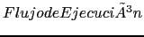

Next: Requerimientos para el diseño Up: Sartorio_Cacic2007-Prueba Previous: DOCUMENTACIÓN DE LOS PROCESOS
Si bien los métodos de diseño de Transacciones de UWAT+ pueden ser utilizados para la representación de Transacciones e-learning, es necesario efectuar adecuaciones que tengan en cuenta la inclusión a los contratos (según sección 2). Tal cual fue mencionado en la sección 1, desde la perspectiva de los diseñadores, los contratos deben ser visto como una pieza de software para la instrumentación de los servicios de las herramientas. En consecuencia, es necesario tener un modelo que permita una mejor representación de los contratos, la visualización de su inserción en los servicios y las relaciones que en ellos representan (relaciones entre objetos que implementan servicios, usuarios y herramientas en la Aplicación).
La figura 2 se muestra un diagrama de clase UML que representa a los conceptos, las relaciones entre conceptos y los modelos para la representación de Transacciones. Los esquemas en color blanco pertenecen al modelo original UWAT+. El rectángulo y los esquemas grices describen los objetos, modelos y relaciones que que conforman el nuevo modelo denominado UWATc+.
Como se describe en el diagrama, una Transacción Web es un objeto complejo (conceptual) compuestos por dos tipos de objetos principales pertenecientes al modelo original de UWAT+ y un tercer objeto agregado para la representación de los contratos pertenecientes a las Transacciones e-learning. En el primer grupo se encuentra para la distinción de las actividades de los usuarios y del sistema. El objeto  representa el órden lógico y temporal para la ejecución de las actividades comprendidas en las Transacciones. A su vez, una Transacción Web puede ser descripta por el (desde el punto de vista estático) y el para la definición de las reglas de ejecución de la componente actividad (desde el punto de vista dinámico).
Cuando una Transacción Web contiene un contrato (definida como transacción e-learning) debe ser incluida una nueva componente para el diseño (representrada en la figura como una relación de agregación en el ), conjuntamente con un nuevo modelo de diseño, , que permitira la representación del contrato (caracterizada como relación de asoción con el objeto ).
De esta manera quedan conformados los elementos que componen el modelo UWATc+ (rectángulo gris) y sus relaciones con el modelo original UWAT+. A continuación se describe en detalle el modelo usado por UWATc+ para el diseño de los transacciones que utilizan contratos (transacciones e-learning).